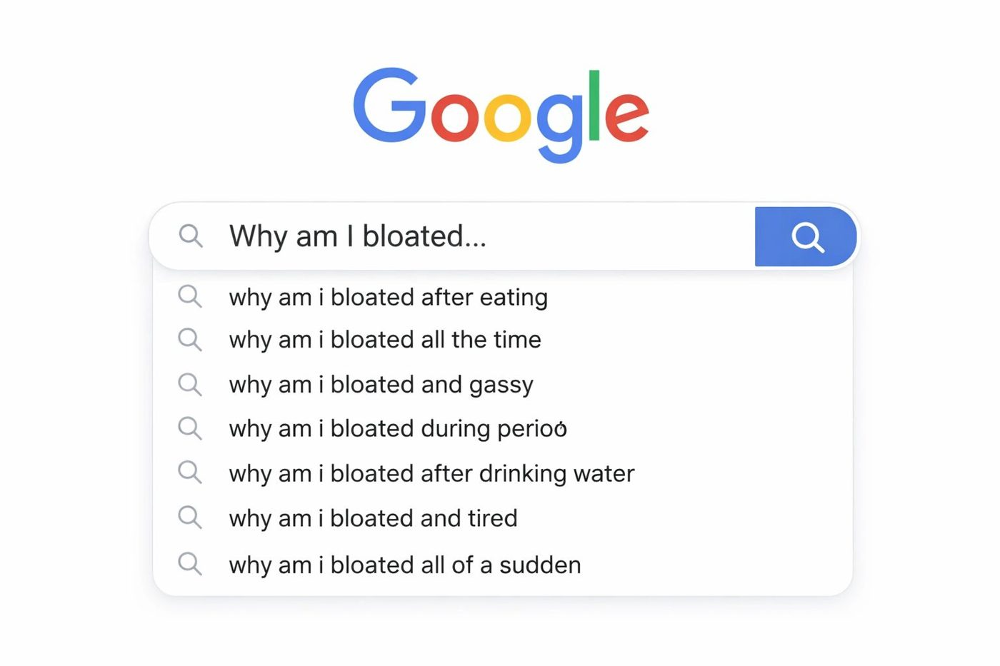

In 2026, the modern woman is more health-literate than any generation before her. If you’re a professional woman over 25, your search history probably looks like a masterclass in biohacking: “How to lower morning cortisol,” “best probiotics for hormonal bloat,” and “why is my weight stuck despite HIIT?”
You prioritize your health. You’ve traded late-night scrolling for sleep hygiene, and your supplement cabinet is a testament to your commitment. Yet, despite the effort, many high-achieving women are hitting a wall. You feel "fine" on paper, but in reality, you’re dealing with a mid-afternoon energy crash, a waistband that feels tighter by 4:00 PM, and a lingering sense that your body is speaking a language you can’t quite translate.
As an Integrative Health Practitioner, I see this every day. You aren't doing it "wrong"—you’re likely just missing the piece of the puzzle that links your bio-individuality to the mind-body connection.
Let’s break down the top wellness searches of the year and, more importantly, what they actually mean for your unique body.
1. The "Stress-Weight" Paradox: Why Your Hustle is Hitting Your Hips
One of the most frequent searches this year is: "Why am I gaining weight while eating clean and exercising?"
For the professional woman, the answer often lies in the delicate dance of the Hypothalamic-Pituitary-Adrenal (HPA) axis. When you are crushing it at work, navigating a busy social calendar, and then hitting a high-intensity workout to "de-stress," your body doesn't distinguish between a deadline and a physical threat.
When your nervous system is stuck in "fight or flight," your body produces excess cortisol. Cortisol is a survival hormone; its job is to store energy for a rainy day—usually right around the midsection.
The Shift: From Burnout to Balance
Bio-individuality means acknowledging that a 6:00 AM spin class might be a "health win" for one woman, but a "stress trigger" for another. If you are already running on adrenaline, more intensity isn't the answer. We need to focus on nervous system regulation.
- The Integrative Approach: Instead of doing more, we look at when. We focus on "snack-sized" nervous system resets—breathing exercises, grounding, and low-impact & slow movement—to tell your body it is safe enough to release stored weight.
2. Gut Health 2.0: Moving Beyond the Probiotic
"Bloating" remains a top-searched symptom for women 25-45. But the search has evolved. Women are no longer just asking "how to stop bloat"; they are searching for "the gut-brain axis" and "microbiome diversity."
You’ve likely realized that a generic probiotic isn't a magic pill. Your gut is a complex ecosystem that affects everything from your mood to your skin clarity.
Why the Bloat Won't Budge
If you’re eating "clean" but feel six months pregnant by dinner, your gut is sending you a distress signal. Common culprits include:
- Low Stomach Acid: Often caused by—you guessed it—stress and eating on the go.
- Dysbiosis: An imbalance of good vs. bad bacteria that can't be fixed by yogurt alone.
- The Mind-Body Link: Your gut is lined with neurons. If your mind is anxious, your digestion literally slows down (or speeds up), leading to fermentation and gas.
The Integrative Edge: We don't guess; we investigate by examining functional labs and a fiber-rich protocol that actually heals the gut lining.
3. Hormonal Literacy: Your Fifth Vital Sign
The rise in searches for "cycle syncing" and "perimenopause symptoms in your 30s" proves that women are tired of being told their hormonal symptoms are "just part of being a woman or getting old."
Whether you are 26 or 46, your hormones are your body’s internal GPS. When they are out of balance—due to endocrine disruptors, poor gut health, or chronic stress—the symptoms show up everywhere:
- Skin: Hormonal acne along the jawline.
- Mood: Irritability or "the blues" the week before your period.
- Metabolism: That stubborn "puffiness" that won't go away.
Embracing Bio-individuality
You are not a small man. You operate on an infradian rhythm (a 28-day cycle), not just a 24-hour circadian rhythm. Your nutritional needs on Day 3 of your cycle are vastly different from Day 17.
The Integrative Approach: We work with your biology, not against it. By tracking your cycle and supporting your liver’s ability to detoxify excess estrogen, we can eliminate the "monthly rollercoaster" and help you feel consistent and empowered in your own skin.
4. The Mind-Body Connection: The Missing Link in Your Wellness ROI
You can have the perfect diet and the most expensive supplements, but if your mind-body connection is severed, you won't see the "Return on Investment" (ROI) for your health efforts.
We live in a world that rewards us for being "in our heads." But your body is constantly sending signals. That nagging fatigue? That sudden bloat? That’s data.
In my practice, we focus on Somatic Health. This means learning to listen to the subtle cues your body gives you before they become loud, painful symptoms. When you align your mental state with your physical needs, "health" stops feeling like a chore and starts feeling like second nature.
Why Google Can’t Replace a Health Coach
The internet is full of information, but it lacks context.
Searching for "the best diet for hormones" will give you 50 million results, many of them contradictory. One site tells you to go Keto; another tells you to go Vegan. One influencer says HIIT is essential; another says it’s ruining your thyroid or showing quick fixes instead of long-term results.
As an Integrative Health Practitioner, I don't look at your symptoms in a vacuum. I look at the whole picture: your career stress, your gut microbiome, your hormonal shifts, and your relationship with your body.
True wellness isn't about following a trend; it’s about discovering your own unique blueprint.
Ready to Stop Searching and Start Healing?
You’ve done the research. You’ve put in the work. Now, it’s time for a strategy that actually sticks.
If you’re ready to get to the root cause of your bloating, balance your hormones, and finally feel at home in your skin again, I’m here to help. You don't have to navigate the complex world of integrative health alone.
Let's chat about your goals.
I invite you to book a Free Wellness Transformation Call. During this 20-minute session, we’ll dive into what’s been holding you back and outline a path toward the vibrant, resilient version of yourself you know is in there.